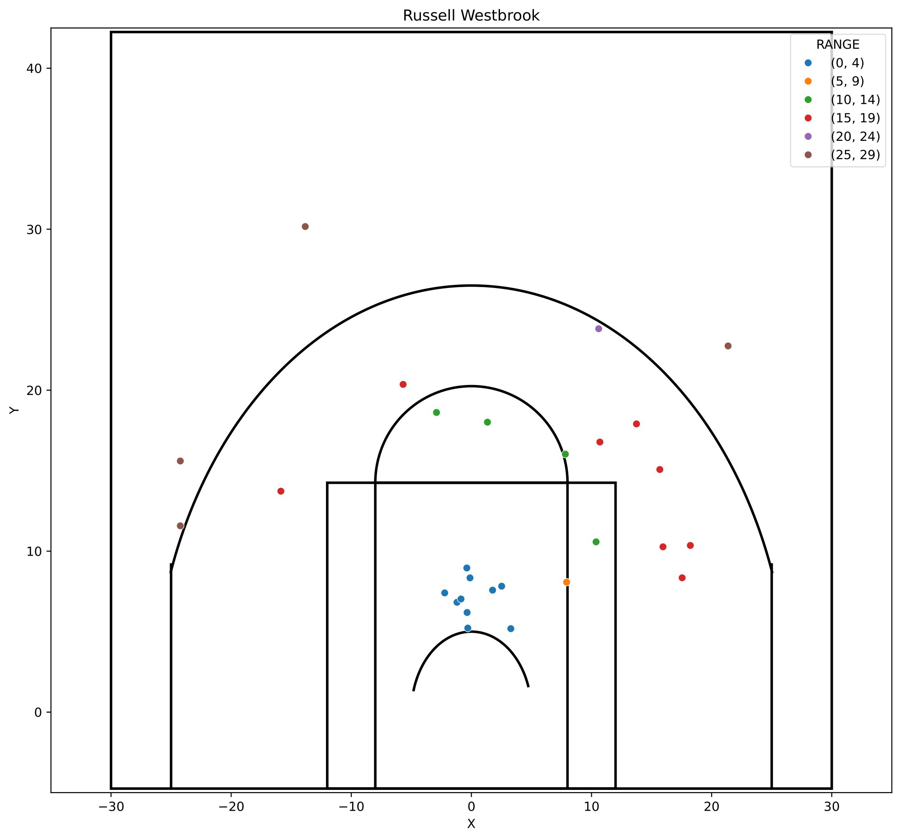
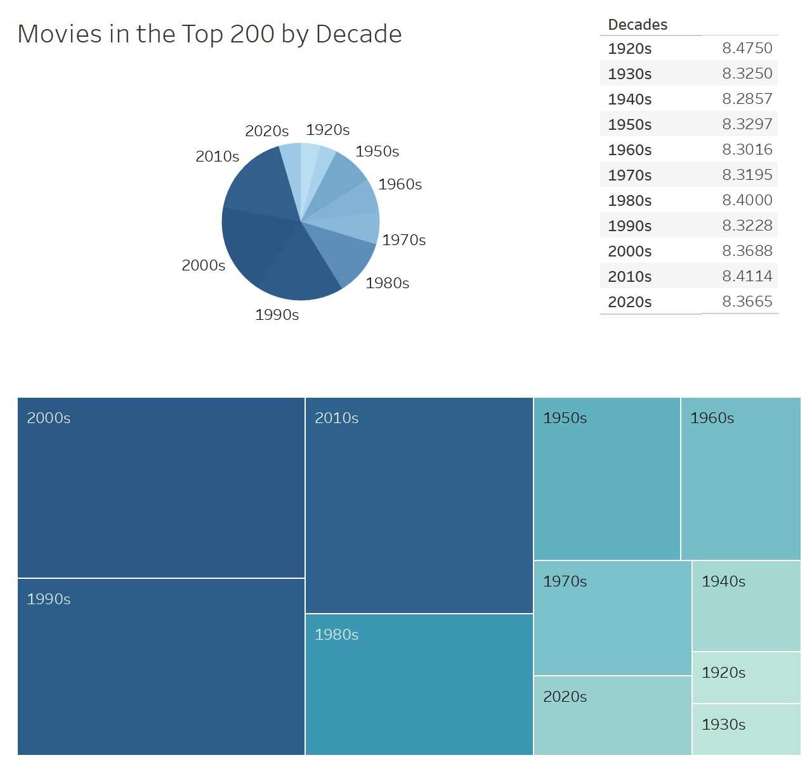

April 25, 2023
In this proyect I took existing data on four NBA point guards and compared their efficiencies. First, I got their overall efficiency. Next, I got their efficiency when guarded by the other point guards. Lastly, I mapped where their made shots on the court while classyfing them by distance.


In this project I decided I wanted to know a little more about imdb scoring. I web scraped their top 250 movies with the pupose of answering the following questions:
Are the scores more biased to older or newer movies?, Which actors have the highest average imdb score of movies they have been feautred in?, Which genres get higher scores?, Which decades have the best scores?